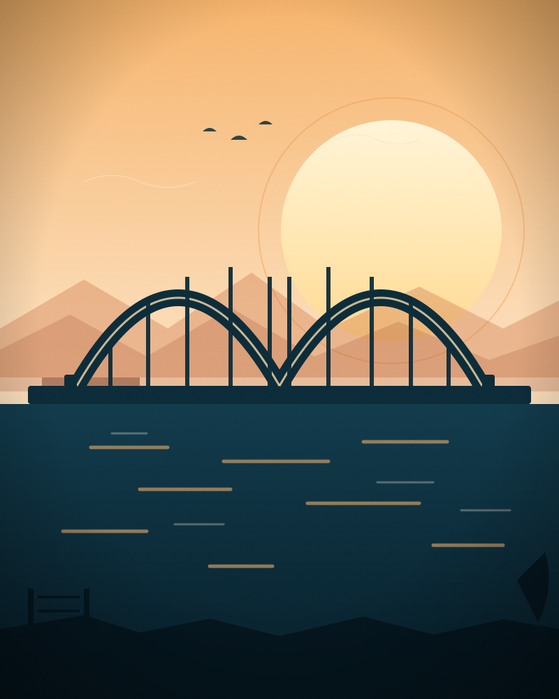

Город как холст на Амуре
Сорок с лишним муралов на фасадах, складах и гаражных стенах. Мы собрали их истории, авторов и адреса — чтобы вы могли пройти город и увидеть его заново. Начните с тигра.


в Хабаровске
и коллективов
маршрута
фестиваля
Стена — это
разговор
Мурал — не украшение фасада, а высказывание. Большое, уличное и очень личное.
Уличное искусство в Хабаровске выросло из дворовых рисунков и первых фестивалей конца 2010-х. Сначала это были смелые эксперименты на гаражных стенах, потом — согласованные росписи на жилых домах, складах и школах. Сегодня муралы стали частью городской навигации: по ним назначают встречи, их показывают гостям, вокруг них строят маршруты.
Этот проект — попытка собрать городские истории в одном месте. Мы описываем не только «что нарисовано», но и почему: кто стоял у стены, сколько слоёв краски ушло, какие детали видно только вблизи и что изменилось в районе после появления росписи.
- Восемь подробных историй — от первого мурала 2018 года до работы 2025-го
- Интерактивная карта с адресами и точками на схеме города
- Четыре пешеходных маршрута: от двух часов до половины дня
Муралы, которые
стоит увидеть
Три точки, с которых удобно начать знакомство с городом на стенах. У каждой — своя история и свой автор. Весь каталог ↗
Как стены
заговорили
Всё началось с одного фасада на Комсомольской — и восьми лет, за которые город привык смотреть вверх.
Первый мурал появился без гранта и фестиваля: краску собирали соседи, эскиз согласовывали во дворе. Сегодня росписи согласуют с жителями и архитекторами, а некоторые стены становятся визитными карточками районов.
Хроника 2018—2026Восемь точек.
Один город.
Начни с любой.
Схема Хабаровска с отмеченными муралами: выбирайте точку, читайте историю и стройте свой маршрут. Все адреса — в шаговой доступности от общественного транспорта.